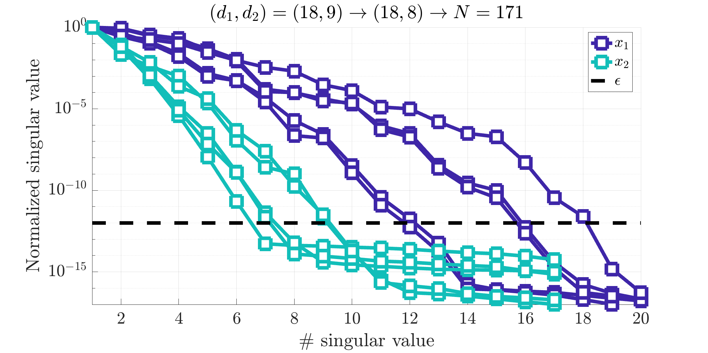
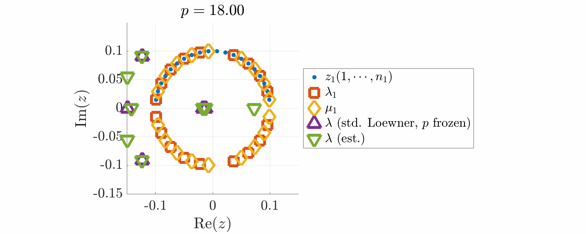
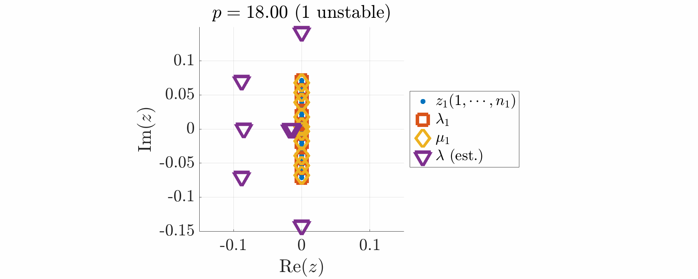
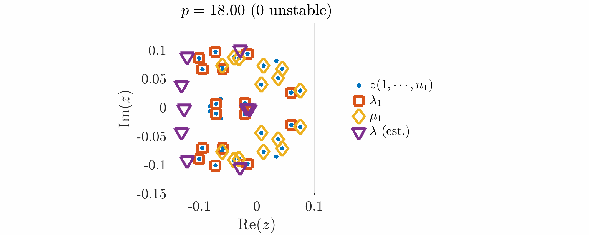

Nonlinear eigenvalues problem (NEVP)
Define an eigenvalue problem and interpolation points
Start by defining your eigenvalue problem. The objective is to find eigenvalues $\lambda(p)\in\mathbb C$ and eigenvectors $V(p)\in C^n$ of $\Phi:\mathbb C \times \mathbb C \leftarrow \mathbb C^{n \times n}$Phi such that
$$
\Phi(\lambda(p),p)V(p) = 0 \text{~~for $p\in \mathcal P$},
$$
where
$$
\Phi(z,p) = (z+0.01 e^{-z p}) I_{10}-\text{diag}(\text{logspace}(-4,10,10)),
$$
This highly active problem can be solved by applying NLEVP for every frozen $p$-parameter value.
Here, to attack this problem we suggest to approximate the fictious multivariate function $H(z,p)$ given as
$$
H(z,p) = 1_{1,10}\Phi(z,p)^{-1}1_{10,1},
$$
by a multivariate rational function and its associated realization, thus leading to classical GEVP (generalized eigenvalue problem) resolution instead.
E = diag(logspace(-4,10,10));
Phi = @(x) (x(:,1)+0.01*exp(-x(:,1).*x(:,2)))*eye(10)+E;
H = @(x) ones(1,10)*(Phi(x)\ones(10,1) );
Hf = @(x1,x2) H([x1,x2]);
p_c and row p_r sets.
In addition, to preserve the symmetry and allow real matrix realization, the interpolation points are chosen to be closed by conjugation.
Notice here that the above model $H(z,p)$ is an infinite (time-delayed) model.
ip{1} = .1*exp(1i*linspace(0,pi,22)); % then complex conjugated
ip{1} = ip{1}(2:end-1);
ip{2} = 18:52;
% interlace
for ii = 1:numel(ip)
p_c{ii} = ip{ii}(2:2:end);
p_r{ii} = ip{ii}(1:2:end);
end
% complex conjugate ip{1}
pc{1} = []; pr{1} = [];
for ii = 1:length(p_c{1})
pc{1} = [pc{1} p_c{1}(ii) conj(p_c{1}(ii))];
pr{1} = [pr{1} p_r{1}(ii) conj(p_r{1}(ii))];
end
p_c{1} = [pc{1}];
p_r{1} = [pr{1}];
Build tensor
Then, the tensorized datatab are constructed. Here leading to a 2-D tensor, and more specifically
$$
\mathcal T_2^{\otimes} \in \mathbb R^{40\times 35}
$$
tab = mlf.make_tab(Hf,p_c,p_r,true);
Use the mLF (Alg. 1: direct [A/G/P-V, 2025])
Now we are ready to build the rational approximation. In what follows, theopt.ord_tol set to $10^{-12}$, is used as the threshold for the single variable order detection.
Then the opt.ord_show is used to show the single variable normalized singular value drop (it may help to choose the different orders).
The opt.ord_obj is used to control the complexity along each variables: it is a vector with two entries, related to the first and second variable respectively.
Here inf means that the order along $z$ is automatically chosen while 8 means that along $p$, the order will be at most $8$.
The opt.method_null option is used to chose the null space computation method (here SVD with highest magnitude normalization).
The opt.method is used to select either the recursive ('rec') or full ('full') method.
The algorithm computes g, a handle function; and iloe, gathering some informations about the process and notably the interpolation points $(\lambda_1,\lambda_2)$, the evaluation values $w$ and the barycentric weights $c$.
More specifically, the rational approximation takes the following form:
$$
g(x_{1},x_{2}) =
\dfrac{\sum_{j_1=1}^{k_1}\sum_{j_2=1}^{k_2}\dfrac{c(j_1,j_2)w(j_1,j_2)}{(x_{1}-\lambda_{1}(j_1))(x_{2}-\lambda_{2}(j_2))}}{\sum_{j_1=1}^{k_1}\sum_{j_2=1}^{k_2} \dfrac{c(j_1,j_2)}{(x_{1}-\lambda_{1}(j_1))(x_{2}-\lambda_{2}(j_2))}}
$$
opt.ord_tol = 1e-12;
opt.method_null = 'svd0';
opt.method = 'full';
opt.ord_obj = [inf 8];
opt.ord_show = true;
[g,iloe] = mlf.alg1(tab,p_c,p_r,opt);
opt.ord_tol allows to adjust this (see also opt.ord_obj).

Normalized singular values of some of the single variable Loewner matrices.
Construct the associated realization
Now we compute the multivariate realization (and its compressed version) as follows. The realization handle function is given inHr, and informatoin about the resolvant are in the structure ireal.
% Original
[~,ireal] = mlf.make_realization_lag(iloe.pc,iloe.w,iloe.c,[]);
% Compressed
[Hr,ireal] = mlf.make_realization_compressed(ireal);
Phir = ireal.Phi;
A = -Phir(0,p);
E = Phir(1,p)+A;
eigV = eig(A,E);


